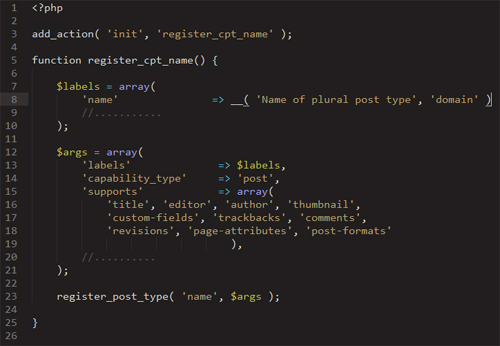

Why Custom Post Types are Awesome:
A Crash Course in CPTs:
Scalability and why it's important
by Dan Beil
@add_action_dan
@blueearth
Who I am
- Dan Beil
- B.S. in Applied Sociology (2005)
- Front-end WordPress Developer currently at Blue Earth Interactive - St Paul, MN
- Freelanced for 4-ish Years prior to BEI
@add_action_dan
@blueearth
What to take a way from this
- End Users / Clients: Terminology, Capabilities, Limitations
- Designers: Terminology, Capabilities, Limitations
- Same stuff as End Users but now you can communicate with the developer
- Developers: Free Code, Plugin / Theme Examples, Possibly even new ideas to increase income!?!?!
A few popular plugins that use CPTs

- Meteor Slides (Josh Leuze)
- The Events Calendar (Modern Tribe)
- WooCommerce (Woo Themes)
- CPTs can do Sliders, Ecomm, and Events!
@add_action_dan
@blueearth
Why CPTs
- Scalability
- Versitility
- Populatrity / Support
- Meta Boxes!
@add_action_dan
@blueearth
Meta Boxes
This is important
Meta boxes allow you to extend the functionality and organize content of any registered post type (including pages).
Because meta boxes do not need to be registered along with the CPT we can add meta boxes to other's work without hacking plugins (i.e. WooCommerce).
A Custom Post is good
Customizing Meta Boxes are better
- Imagine a CPT to list employees, that would need
- Name (Post Title)
- Description / About (the_content / editor)
- Meta Boxes for
- Phone
- Email
- Fax (if people still use this)
- Image
- Twitter Handle
Screw These Slides Lets get to some code!